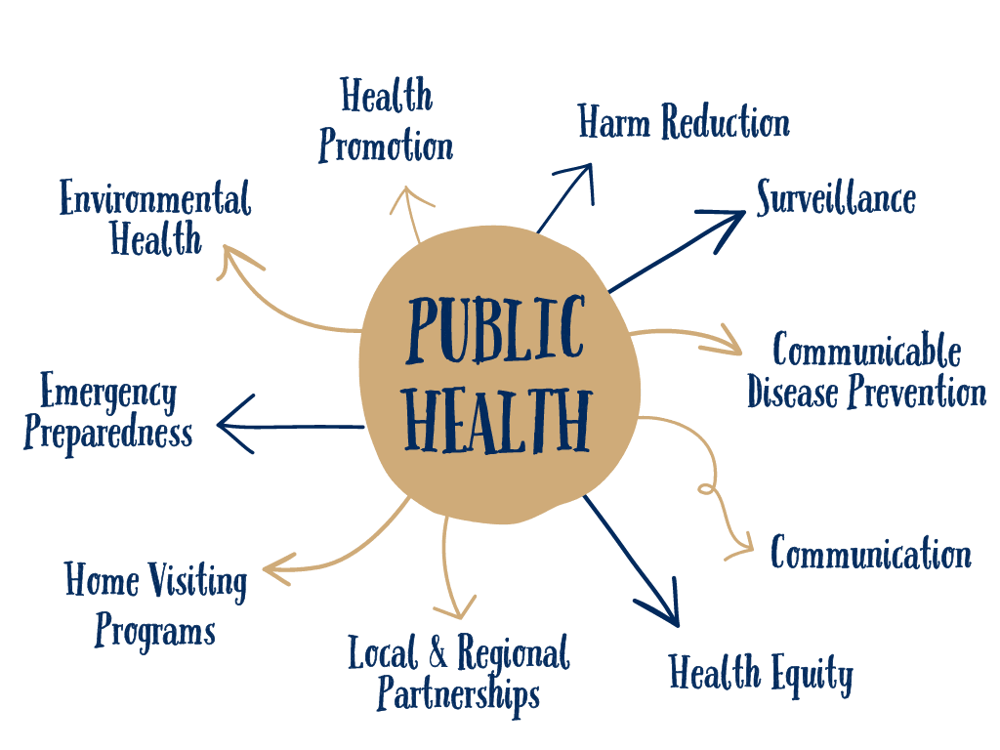
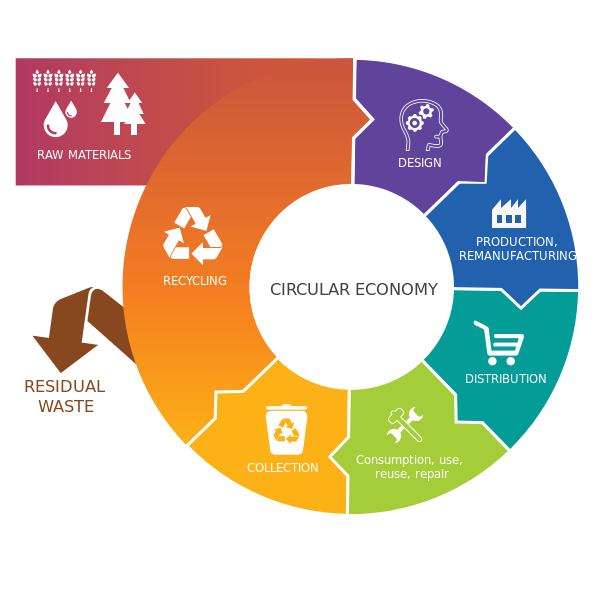

The Water, Public Health and Environment department consists of five specialised research groups working collaboratively to address complex challenges in environmental health and sustainability.
Our interdisciplinary approach combines expertise from engineering, biology, chemistry, public health, and social sciences to develop innovative solutions with real-world impact.
Indoor Air

Improving the Air We Breathe
The Indoor Air research group focuses on understanding and improving the quality of air in built environments. With people spending up to 90% of their time indoors, our research addresses critical questions about air pollutants, ventilation systems, and their impacts on human health and wellbeing.
Our interdisciplinary team combines expertise in mathematics, chemistry, building engineering, and public health to develop innovative monitoring technologies, evidence-based interventions, and policy recommendations.
Learn MoreResearch Areas
Sensing & Monitoring
Developing sensor networks and analytical techniques for real-time air quality monitoring in diverse indoor environments.
Health Impacts
Modelling relationships between indoor air pollutants and respiratory, cardiovascular, and cognitive health outcomes.
Ventilation Systems
Optimising ventilation strategies and HVAC systems for energy efficiency and improved indoor air quality.
Building Materials
Studying emissions from building materials and developing low-emission alternatives for healthier indoor environments.
Key Projects
Modelling Airflow Around Buildings
How air behaves around buildings impacts on how natural ventilation brings in fresh air.
Completed
Healthy Buildings Network
Bringing together academics, industry and policy makers through dedicated workshops to build lasting partnerships around healthy buildings.
Ongoing
Hospital Environment Control, Optimisation and Infection Risk Assessment (HECOIRA)
Redesigning ventilation systems in healthcare settings to reduce pathogen transmission while maintaining energy efficiency.
CompletedGroup Leader

Dr. Marco-Felipe King
Lecturer in Building Engineering and Infection Control
He focuses on how ventilation strategies, building design, and occupant behaviour affect indoor air quality and pathogen transmission. His interdisciplinary work combines computational fluid dynamics (CFD) modeling, experimental studies, and real-world applications to reduce the spread of airborne infections in healthcare and public buildings. By partnering with the NHS and industry, Dr. King’s research drives evidence-based improvements in indoor air management, advancing healthy, sustainable environments for occupants and communities.
BioResources

Transforming Waste into Resource
The BioResources group is focused on developing sustainable technologies for resource recovery and circular economy applications. Our research harnesses biological processes to transform waste streams into valuable materials, energy, and nutrients.
We work at the intersection of environmental biotechnology, chemical engineering, and sustainability science to develop and scale solutions that address waste management challenges while recovering valuable resources.
Learn MoreResearch Areas
Waste Valorization
Converting organic waste streams into high-value products including biofuels, bioplastics, and specialty chemicals.
Microbial Biotechnology
Harnessing microbial communities for resource recovery and environmental remediation applications.
Nutrient Recovery
Developing technologies to extract and recycle essential nutrients like nitrogen and phosphorus from waste streams.
Industrial Symbiosis
Creating integrated biorefinery concepts where waste from one process becomes a resource for another.
Public Health

Environmental Health in Communities
Our Public Health research group investigates the complex relationships between environmental factors and human health outcomes. We combine epidemiological studies, exposure science, and community-based participatory research to address pressing public health challenges.
The group's multidisciplinary approach integrates methods from public health, social sciences, microbiology, and environmental monitoring to develop evidence-based interventions for healthier communities.
Learn MoreSanitation

Sustainable Sanitation Solutions
The Sanitation research group develops innovative approaches to water and sanitation challenges in both developed and developing regions. Our work spans from advanced wastewater treatment technologies to off-grid sanitation solutions for resource-limited settings.
We integrate technical innovation with social, economic, and policy considerations to create sustainable sanitation systems that protect public health and the environment.
Learn MoreWater

Water Engineering & Management
The Water research group works across the full water cycle — from source protection and treatment to distribution, flood risk and transboundary water governance. Our work combines computational hydraulics, environmental chemistry, and hydrology.
We address global challenges including water scarcity, flood resilience and water quality, partnering with governments, utilities and international agencies to translate research into practice.
Learn MoreCollaborative Research
Our research groups frequently collaborate on interdisciplinary projects that address complex environmental and public health challenges requiring diverse expertise.

Microplastics: From Source to Solution
This multidisciplinary project investigates microplastic pollution across multiple environments – from indoor dust to wastewater systems – and evaluates health impacts and mitigation strategies.
Learn More
Circular Buildings Initiative
Developing integrated systems for buildings that recover water, energy, and nutrients while maintaining healthy indoor environments and minimizing environmental impact.
Learn More
Urban Environmental Health
Investigating the combined effects of indoor and outdoor environmental exposures on public health in urban communities, with emphasis on vulnerable populations.
Learn More